| Jogo | Categoria | Plataforma | Personagem principal | Ano de Lançamento | Pontuação |
|---|---|---|---|---|---|
| 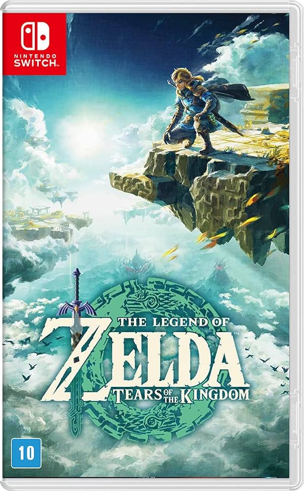 Legend of Zelda: Tears of the Kingdom |
The Legend of Zelda: Tears of the Kingdom é um jogo eletrônico de ação-aventura desenvolvido e publicado pela Nintendo. Foi lançado em 12 de maio de 2023 para Nintendo Switch. Ele faz parte da série The Legend of Zelda, e é a sequência de The Legend of Zelda: Breath of the Wild. |
Nintendo Switch |
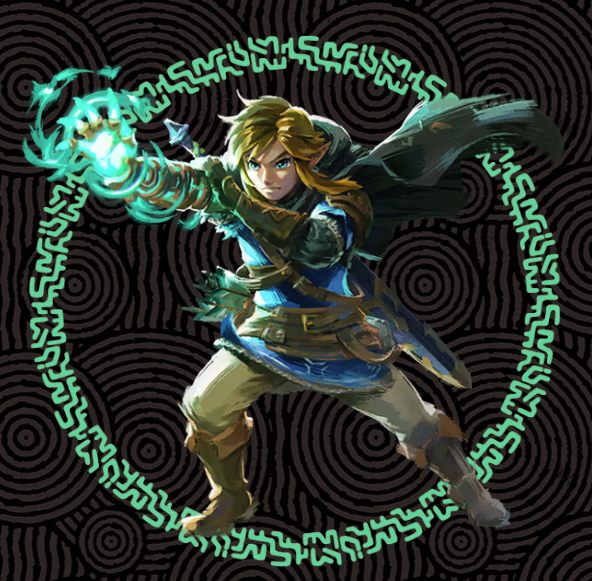 Link |
12 de maio de 2023 | 4,9 |
| 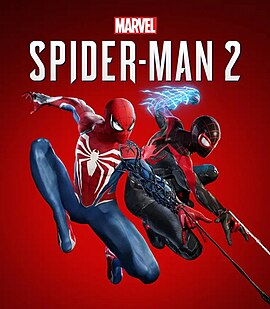 Spider-man 2 |
Marvel's Spider-Man 2 é um jogo eletrônico de ação-aventura desenvolvido pela Insomniac Games e publicado pela Sony Interactive Entertainment para o PlayStation 5. |
Playstation 5 |
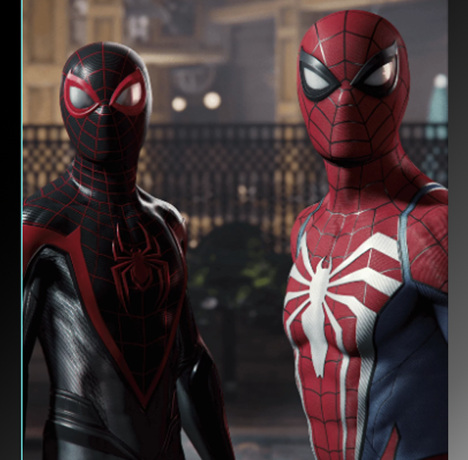 Peter Parker |
20 de outubro de 2023 | 4,8 |
 Hogwarts Legacy |
Hogwarts Legacy é um jogo eletrônico de RPG de ação desenvolvido pela Avalanche Software e publicado pela Warner Bros. Interactive Entertainment sob o selo Portkey Games. O jogo é ambientado no final do século XIX do universo de Harry Potter, um século antes dos eventos narrados nos livros de J.K. Rowling. |
PlayStation 5, Nintendo Switch, PlayStation 4 |
Multijogadores | 10 de fevereiro de 2023 | 4,8 |
| 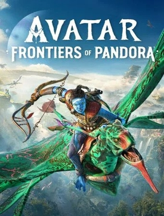 Avatar: Frontiers of Pandora |
Avatar: Frontiers of Pandora é um jogo eletrônico de ação e aventura em mundo aberto, desenvolvido pela Massive Entertainment e publicado pela Ubisoft. |
PlayStation 5, Xbox Series X e Series S, Microsoft Windows, Amazon Luna |
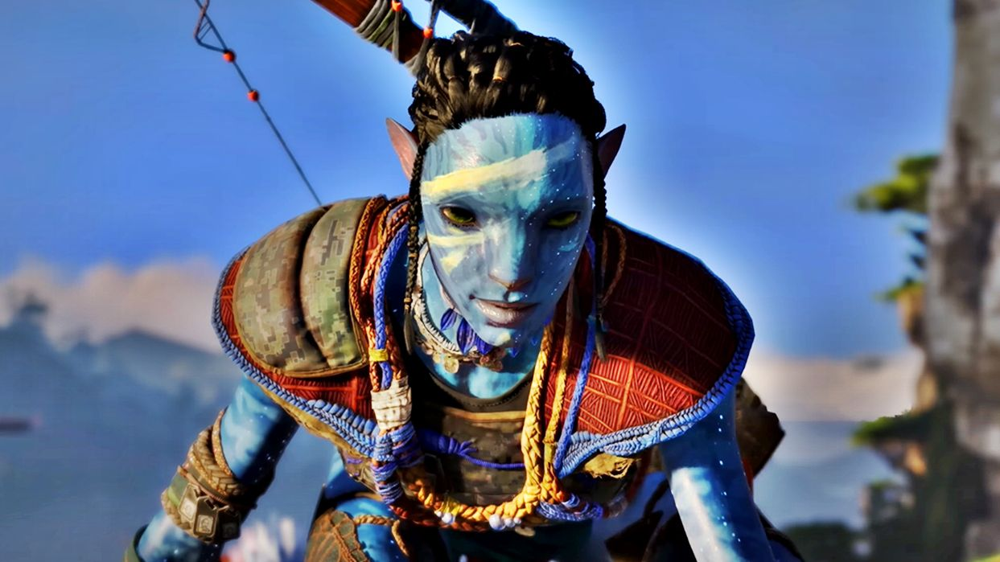 Jake Sully |
7 de dezembro de 2023 | 4,3 |
| 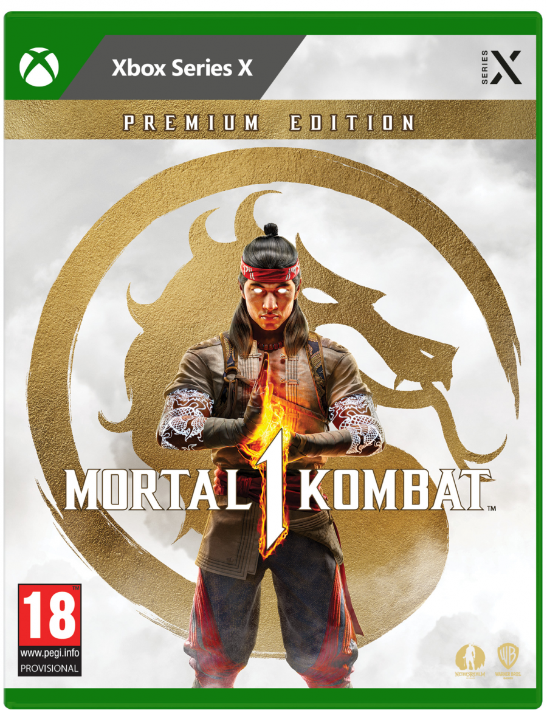 Mortal Kombat 1 |
Mortal Kombat 1 é um jogo eletrônico de luta desenvolvido pela NetherRealm Studios e publicado pela Warner Bros.. Foi lançado em 19 de setembro de 2023 para PlayStation 5, Xbox Series X/S, Nintendo Switch e Windows. Mortal Kombat 1 é um reboot da série Mortal Kombat. |
PlayStation 5, Nintendo Switch, Xbox Series X e Series S, Microsoft Windows |
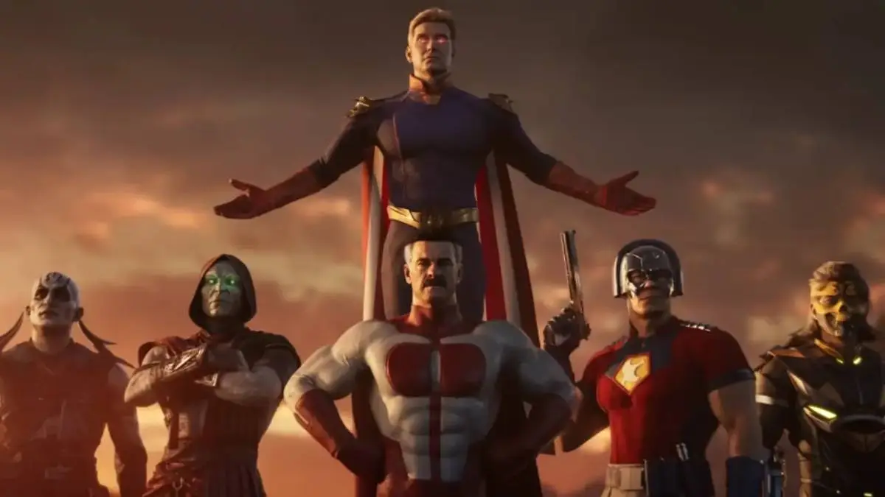 Multipersonagens |
14 de setembro de 2023 | 4,9 |
Street fight 6 |
Street Fighter 6 é um jogo eletrônico de luta desenvolvido e publicado pela Capcom. É a sétima entrada principal da franquia Street Fighter, e foi lançado para PlayStation 4, PlayStation 5, Windows e Xbox Series X/S em 2 de junho de 2023, ao passo que uma versão para arcade será publicada pela Taito mais tarde no mesmo ano. |
PlayStation 5, PlayStation 4, Arcade, Xbox Series X e Series S, Microsoft Windows |
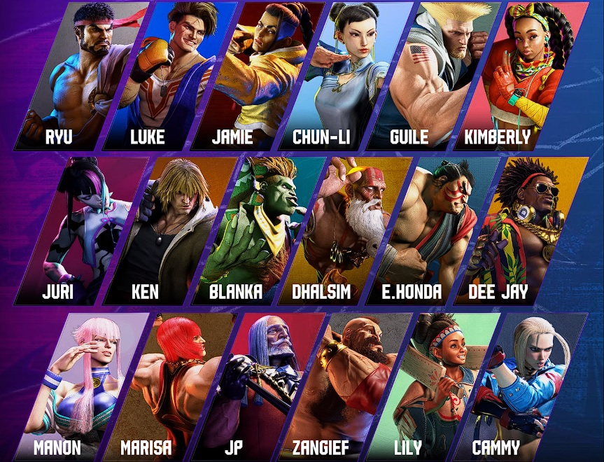 Multipersonagens |
2 de junho de 2023 | 4,9 |
| 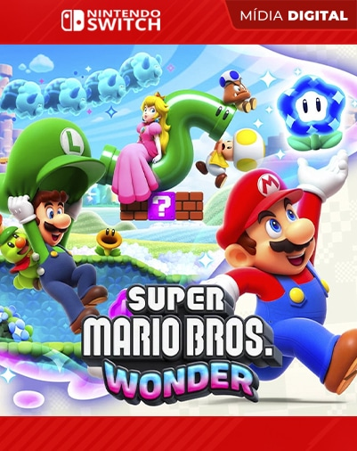 Super Mario Bros Wonder |
Super Mario Bros. Wonder é um jogo eletrônico de plataforma desenvolvido e publicado pela Nintendo. Foi lançado para o Nintendo Switch em 20 de outubro de 2023, sendo o primeiro jogo de rolagem lateral da série Super Mario desde New Super Mario Bros. U. |
Nintendo Switch |
 Mario |
20 de outubro de 2023 | 4,9 |
| 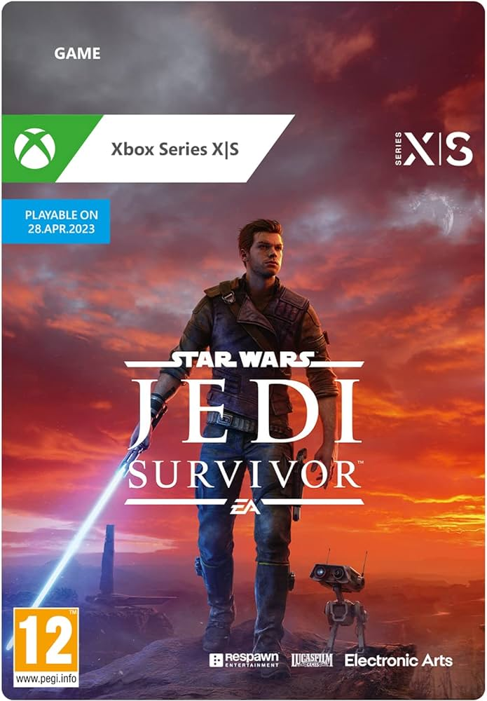 starswars - jedi survivor |
Star Wars Jedi: Survivor é um jogo de ação e aventura desenvolvido pela Respawn Entertainment e publicado pela Electronic Arts. Foi lançado em 28 de abril de 2023, sendo disponível para PlayStation 5, Windows e Xbox Series X/S como uma continuação de Star Wars Jedi: Fallen Order. |
PlayStation 5, Xbox Series X e Series S, Microsoft Windows |
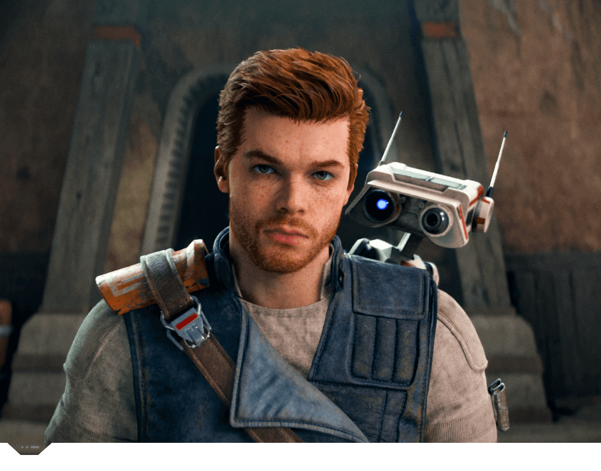 Cal Kestis |
28 de abril de 2023 | 4,3 |
| 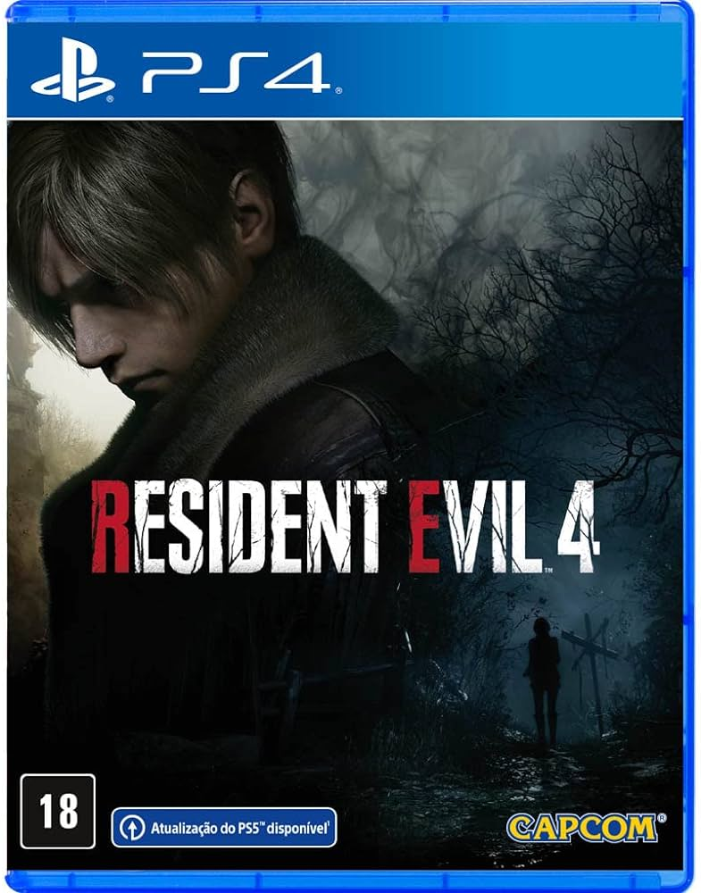 Resident Evl 4 Remake |
Resident Evil 4, conhecido no Japão como Biohazard RE:4, é um jogo eletrônico de survival horror desenvolvido e publicado pela Capcom. É um remake de Resident Evil 4, lançado originalmente em 2005 para o Nintendo GameCube. |
PlayStation 5, PlayStation 4, Xbox Series X e Series S, macOS, iOS, Microsoft Windows, Mac OS |
Leon |
23 de março de 2023 | 4,7 |
| 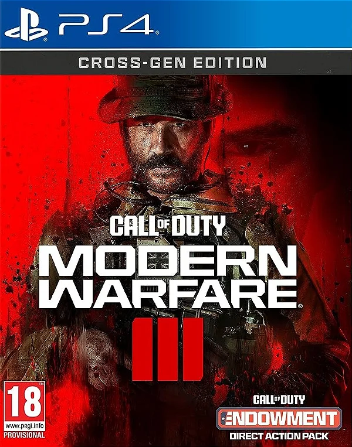 Cal Of Duty - Modern Warfare 3 |
Call of Duty: Modern Warfare III é um jogo eletrônico de tiro em primeira pessoa desenvolvido pela Sledgehammer Games e publicado pela Activision. É o vigésimo jogo da série Call of Duty e a terceira entrada na subsérie Modern Warfare reiniciada, servindo como sequência de Modern Warfare II de 2022. |
PlayStation 5, PlayStation 4, Xbox Series X e Series S, Xbox One, Microsoft Windows |
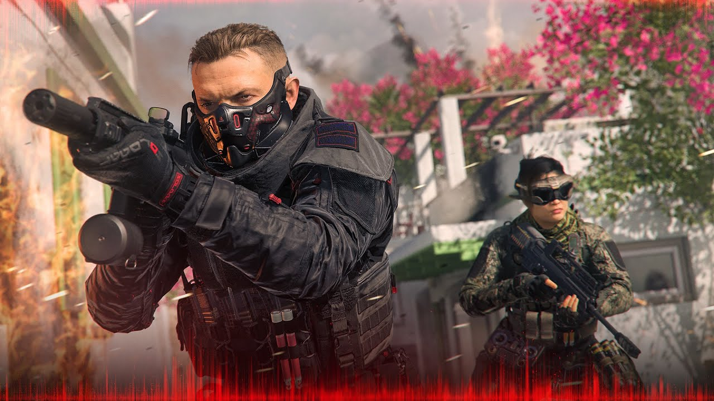 Multipersonagens |
10 de novembro de 2023 | 4,9 |